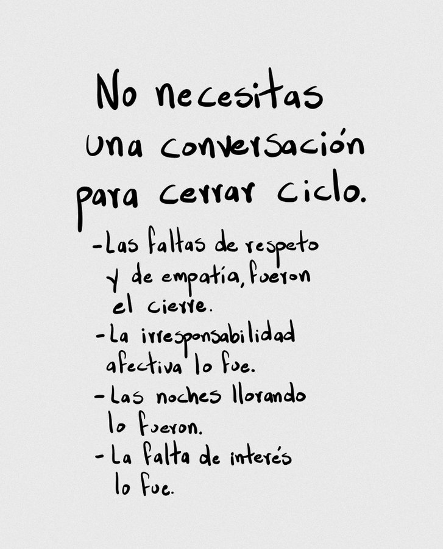

Las faltas de respeto y de empatía fueron el cierre.
La no responsabilidad afectiva ni reciprocidad lo fueron.
Las noches llorando lo fueron.
Las faltas de interés lo fueron.
Ya os dijísteis adiós.
